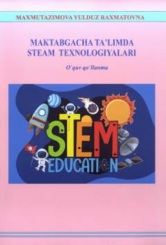

MTMaktabgacha ta'limda STEAM texnologiyalarini qo'llash bo'yicha o'quv qo'llanma.
Ushbu o'quv qo'llanma maktabgacha ta'lim tizimida STEAM texnologiyalarini joriy etishning nazariy va amaliy asoslarini yoritib beradi. Unda bolalarning ijodiy va tanqidiy fikrlash ko'nikmalarini rivojlantirishga qaratilgan zamonaviy pedagogik yondashuvlar hamda ta'lim jarayonini texnologiyalashtirish masalalari tahlil qilingan.